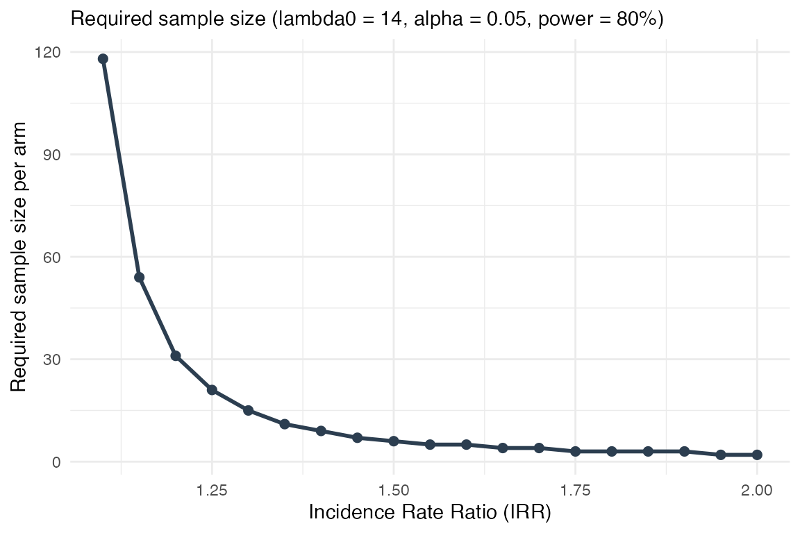
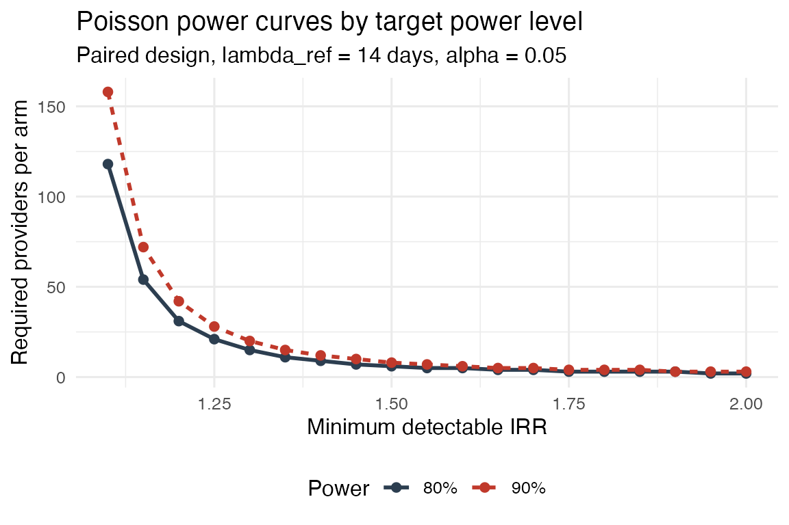
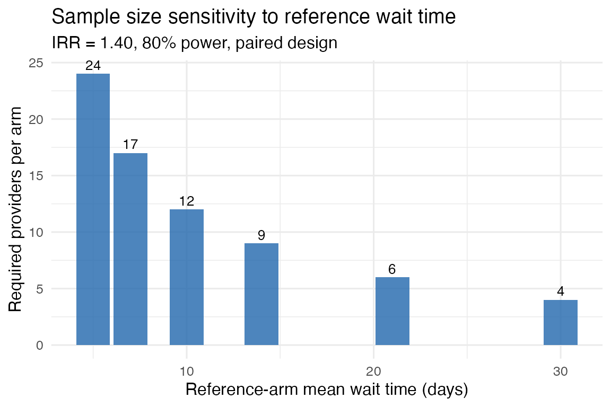

Power Analysis and Sample Size for Mystery Caller Studies
Source:vignettes/power-analysis.Rmd
power-analysis.RmdOverview
A mystery caller (audit) study requires careful pre-study planning to ensure the resulting data can answer the research question with adequate statistical precision. This vignette covers three interrelated planning decisions:
- Sampling frame — How many providers from the directory must be called (Cochran finite-population formula)?
- Power for a count outcome — How many providers per insurance arm are needed to detect a clinically meaningful difference in wait days (Poisson power analysis)?
- Power curves — How does required sample size change across a range of effect sizes?
The functions shown here are in the power analysis
family:
| Function | Purpose |
|---|---|
mysterycall_cochran_n() |
Finite-population sample size for proportion outcomes |
mysterycall_poisson_power() |
Sample size for Poisson count outcomes (wait days) |
mysterycall_equation_figure() |
Power curve plot across a range of IRR values |
1. Background: Two Types of Outcomes
Mystery caller studies typically involve two kinds of outcomes:
| Outcome | Example | Statistical model | Planning tool |
|---|---|---|---|
| Binary | Was the call accepted? (yes/no) | Logistic regression | Cochran formula |
| Count | How many days until appointment? | Poisson / negative-binomial GLMM | Poisson power formula |
The sample size differs for each.
2. Cochran Finite-Population Sample Size
Mathematical basis
When the sampling frame is a known, finite directory of providers, the Cochran (1977) formula gives the minimum sample so that the estimated proportion (e.g. acceptance rate) is within percentage points with 95 % confidence:
Setting (maximum variance) and this simplifies to:
The finite-population correction factor makes whenever the sample represents a meaningful fraction of the directory.
Using mysterycall_cochran_n()
# 800 OB-GYNs in target region — need acceptance rate within ±5 percentage points
res_800 <- mysterycall_cochran_n(N = 800, margin_of_error = 0.05)
cat(sprintf(
"N = %d providers, target ME ±%.0f%%: sample n = %d (achieved ME = ±%.1f%%)\n",
res_800$N, res_800$margin_of_error * 100,
res_800$n, res_800$effective_margin * 100
))
#> N = 800 providers, target ME ±5%: sample n = 267 (achieved ME = ±5.0%)
# Show how n changes across directory sizes and margin-of-error targets
grid <- expand.grid(
N = c(100, 200, 400, 800, 1600),
me = c(0.03, 0.05, 0.10)
)
grid$n <- mapply(
function(N, me) mysterycall_cochran_n(N, me)$n,
grid$N, grid$me
)
pivot_tbl <- stats::reshape(
grid,
idvar = "N", timevar = "me", direction = "wide"
)
names(pivot_tbl) <- c("Directory size (N)", "n at ±3%", "n at ±5%", "n at ±10%")
knitr::kable(
pivot_tbl,
caption = "Required sample sizes across directory sizes and precision targets."
)| Directory size (N) | n at ±3% | n at ±5% | n at ±10% |
|---|---|---|---|
| 100 | 92 | 80 | 50 |
| 200 | 170 | 134 | 67 |
| 400 | 295 | 200 | 80 |
| 800 | 466 | 267 | 89 |
| 1600 | 656 | 320 | 95 |
Key insight: For moderate-to-large directories (N ≥ 400), the ±5% target requires roughly 200 providers regardless of how large the directory grows — the finite-population correction becomes negligible.
3. Poisson Power Analysis for Count Outcomes
Mathematical basis
Wait times (business days until appointment) are count data analysed with a Poisson generalised linear model (or mixed model when physicians are called with both insurance types). The parameter of interest is the incidence rate ratio (IRR): how many times longer is the Medicaid wait compared with the private-insurance wait?
The score-test sample size for comparing two independent Poisson rates (reference arm) and (comparison arm) is:
This gives providers per arm. In a paired design (each provider is called with both insurance types) only providers are needed in total.
Worked example
Suppose prior published work suggests physicians give Medicaid callers a wait of about 1.40 times the BCBS wait. The BCBS mean is 14 business days. How many providers are needed for 80 % power?
pw <- mysterycall_poisson_power(
irr = 1.40, # Medicaid wait is 40% longer
lambda_ref = 14, # BCBS mean = 14 business days
alpha = 0.05,
power = 0.80,
both_arms = TRUE # paired design
)
#> Poisson power: IRR=1.40, lambda_ref=14.0, lambda_trt=19.6 | n_per_arm=9, n_total=9, calls=18
cat(sprintf(
"IRR = %.2f | lambda_ref = %.0f d | lambda_trt = %.0f d\n",
pw$irr, pw$lambda_ref, pw$lambda_trt
))
#> IRR = 1.40 | lambda_ref = 14 d | lambda_trt = 20 d
cat(sprintf(
"n per arm = %d | total providers = %d | total calls = %d\n",
pw$n_per_arm, pw$n_total, pw$n_total_calls
))
#> n per arm = 9 | total providers = 9 | total calls = 18Comparing power and effect sizes
scenarios <- list(
list(irr = 1.20, power = 0.80, label = "Small effect (IRR 1.20), 80% power"),
list(irr = 1.40, power = 0.80, label = "Moderate effect (IRR 1.40), 80% power"),
list(irr = 1.40, power = 0.90, label = "Moderate effect (IRR 1.40), 90% power"),
list(irr = 1.60, power = 0.80, label = "Large effect (IRR 1.60), 80% power"),
list(irr = 2.00, power = 0.80, label = "Very large effect (IRR 2.00), 80% power")
)
pw_rows <- lapply(scenarios, function(s) {
res <- mysterycall_poisson_power(
irr = s$irr,
lambda_ref = 14,
power = s$power,
both_arms = TRUE
)
data.frame(
Scenario = s$label,
IRR = s$irr,
Power = sprintf("%.0f%%", s$power * 100),
`n per arm` = res$n_per_arm,
`Total providers` = res$n_total,
`Total calls` = res$n_total_calls,
check.names = FALSE
)
})
#> Poisson power: IRR=1.20, lambda_ref=14.0, lambda_trt=16.8 | n_per_arm=31, n_total=31, calls=62
#> Poisson power: IRR=1.40, lambda_ref=14.0, lambda_trt=19.6 | n_per_arm=9, n_total=9, calls=18
#> Poisson power: IRR=1.40, lambda_ref=14.0, lambda_trt=19.6 | n_per_arm=12, n_total=12, calls=24
#> Poisson power: IRR=1.60, lambda_ref=14.0, lambda_trt=22.4 | n_per_arm=5, n_total=5, calls=10
#> Poisson power: IRR=2.00, lambda_ref=14.0, lambda_trt=28.0 | n_per_arm=2, n_total=2, calls=4
pw_tbl <- do.call(rbind, pw_rows)
knitr::kable(
pw_tbl,
caption = paste(
"Poisson power analysis: providers per arm for a paired design,",
"lambda_ref = 14 days, alpha = 0.05."
)
)| Scenario | IRR | Power | n per arm | Total providers | Total calls |
|---|---|---|---|---|---|
| Small effect (IRR 1.20), 80% power | 1.2 | 80% | 31 | 31 | 62 |
| Moderate effect (IRR 1.40), 80% power | 1.4 | 80% | 9 | 9 | 18 |
| Moderate effect (IRR 1.40), 90% power | 1.4 | 90% | 12 | 12 | 24 |
| Large effect (IRR 1.60), 80% power | 1.6 | 80% | 5 | 5 | 10 |
| Very large effect (IRR 2.00), 80% power | 2.0 | 80% | 2 | 2 | 4 |
Interpretation:
- Detecting a small IRR (1.20) requires substantially more providers than detecting a large one (1.60+).
- The paired design (each provider called with both insurance types) halves the total providers compared with an independent-groups design.
- Increasing power from 80 % to 90 % adds roughly 25–35 % more providers.
4. Clustering Adjustment (ICC)
In practice, providers at the same practice share scheduling staff, so calls to the same office may be correlated. The design effect inflates the sample size by:
where is the average calls per cluster (office) and is the intra-class correlation (ICC).
# No clustering vs. ICC = 0.10 (moderate) with 3 calls per office on average
pw_no_icc <- mysterycall_poisson_power(irr = 1.40, lambda_ref = 14)
#> Poisson power: IRR=1.40, lambda_ref=14.0, lambda_trt=19.6 | n_per_arm=9, n_total=9, calls=18
pw_icc_010 <- mysterycall_poisson_power(irr = 1.40, lambda_ref = 14,
icc = 0.10, calls_per_cluster = 3)
#> Poisson power: IRR=1.40, lambda_ref=14.0, lambda_trt=19.6 | n_per_arm=11, n_total=11, calls=22
pw_icc_020 <- mysterycall_poisson_power(irr = 1.40, lambda_ref = 14,
icc = 0.20, calls_per_cluster = 3)
#> Poisson power: IRR=1.40, lambda_ref=14.0, lambda_trt=19.6 | n_per_arm=12, n_total=12, calls=24
icc_tbl <- data.frame(
ICC = c("0 (none)", "0.10 (moderate)", "0.20 (high)"),
DEFF = c(pw_no_icc$design_effect,
pw_icc_010$design_effect,
pw_icc_020$design_effect),
`n per arm` = c(pw_no_icc$n_per_arm,
pw_icc_010$n_per_arm,
pw_icc_020$n_per_arm),
`Total calls` = c(pw_no_icc$n_total_calls,
pw_icc_010$n_total_calls,
pw_icc_020$n_total_calls),
check.names = FALSE
)
knitr::kable(
icc_tbl,
digits = 2,
caption = paste(
"Effect of within-office correlation (ICC) on required sample size.",
"IRR = 1.40, lambda_ref = 14 d, 80% power, m = 3 calls/office."
)
)| ICC | DEFF | n per arm | Total calls |
|---|---|---|---|
| 0 (none) | 1.0 | 9 | 18 |
| 0.10 (moderate) | 1.2 | 11 | 22 |
| 0.20 (high) | 1.4 | 12 | 24 |
Rule of thumb: An ICC of 0.10 with 3 calls per office inflates the required sample by ~20 %. When the ICC is unknown, a sensitivity analysis across ICC values (0, 0.05, 0.10, 0.20) is recommended.
5. Power Curves
A power curve shows how the required sample size per arm changes as a function of the minimum detectable effect (IRR). Plotting the curve helps justify the study’s sample size to reviewers and IRBs.
mysterycall_equation_figure(
lambda0 = 14,
irr_seq = seq(1.10, 2.0, by = 0.05),
alpha = 0.05,
power = 0.80,
both_arms = TRUE
)
#> Poisson power: IRR=1.10, lambda_ref=14.0, lambda_trt=15.4 | n_per_arm=118, n_total=118, calls=236
#> Poisson power: IRR=1.15, lambda_ref=14.0, lambda_trt=16.1 | n_per_arm=54, n_total=54, calls=108
#> Poisson power: IRR=1.20, lambda_ref=14.0, lambda_trt=16.8 | n_per_arm=31, n_total=31, calls=62
#> Poisson power: IRR=1.25, lambda_ref=14.0, lambda_trt=17.5 | n_per_arm=21, n_total=21, calls=42
#> Poisson power: IRR=1.30, lambda_ref=14.0, lambda_trt=18.2 | n_per_arm=15, n_total=15, calls=30
#> Poisson power: IRR=1.35, lambda_ref=14.0, lambda_trt=18.9 | n_per_arm=11, n_total=11, calls=22
#> Poisson power: IRR=1.40, lambda_ref=14.0, lambda_trt=19.6 | n_per_arm=9, n_total=9, calls=18
#> Poisson power: IRR=1.45, lambda_ref=14.0, lambda_trt=20.3 | n_per_arm=7, n_total=7, calls=14
#> Poisson power: IRR=1.50, lambda_ref=14.0, lambda_trt=21.0 | n_per_arm=6, n_total=6, calls=12
#> Poisson power: IRR=1.55, lambda_ref=14.0, lambda_trt=21.7 | n_per_arm=5, n_total=5, calls=10
#> Poisson power: IRR=1.60, lambda_ref=14.0, lambda_trt=22.4 | n_per_arm=5, n_total=5, calls=10
#> Poisson power: IRR=1.65, lambda_ref=14.0, lambda_trt=23.1 | n_per_arm=4, n_total=4, calls=8
#> Poisson power: IRR=1.70, lambda_ref=14.0, lambda_trt=23.8 | n_per_arm=4, n_total=4, calls=8
#> Poisson power: IRR=1.75, lambda_ref=14.0, lambda_trt=24.5 | n_per_arm=3, n_total=3, calls=6
#> Poisson power: IRR=1.80, lambda_ref=14.0, lambda_trt=25.2 | n_per_arm=3, n_total=3, calls=6
#> Poisson power: IRR=1.85, lambda_ref=14.0, lambda_trt=25.9 | n_per_arm=3, n_total=3, calls=6
#> Poisson power: IRR=1.90, lambda_ref=14.0, lambda_trt=26.6 | n_per_arm=3, n_total=3, calls=6
#> Poisson power: IRR=1.95, lambda_ref=14.0, lambda_trt=27.3 | n_per_arm=2, n_total=2, calls=4
#> Poisson power: IRR=2.00, lambda_ref=14.0, lambda_trt=28.0 | n_per_arm=2, n_total=2, calls=4
Required providers per arm (paired design, 80% power, lambda_ref = 14 d) as a function of the minimum detectable IRR.
library(ggplot2)
#> Warning: package 'ggplot2' was built under R version 4.4.3
irr_seq <- seq(1.10, 2.0, by = 0.05)
pw_80 <- vapply(irr_seq, function(irr)
mysterycall_poisson_power(irr, lambda_ref = 14, power = 0.80, both_arms = TRUE)$n_per_arm,
numeric(1))
#> Poisson power: IRR=1.10, lambda_ref=14.0, lambda_trt=15.4 | n_per_arm=118, n_total=118, calls=236
#> Poisson power: IRR=1.15, lambda_ref=14.0, lambda_trt=16.1 | n_per_arm=54, n_total=54, calls=108
#> Poisson power: IRR=1.20, lambda_ref=14.0, lambda_trt=16.8 | n_per_arm=31, n_total=31, calls=62
#> Poisson power: IRR=1.25, lambda_ref=14.0, lambda_trt=17.5 | n_per_arm=21, n_total=21, calls=42
#> Poisson power: IRR=1.30, lambda_ref=14.0, lambda_trt=18.2 | n_per_arm=15, n_total=15, calls=30
#> Poisson power: IRR=1.35, lambda_ref=14.0, lambda_trt=18.9 | n_per_arm=11, n_total=11, calls=22
#> Poisson power: IRR=1.40, lambda_ref=14.0, lambda_trt=19.6 | n_per_arm=9, n_total=9, calls=18
#> Poisson power: IRR=1.45, lambda_ref=14.0, lambda_trt=20.3 | n_per_arm=7, n_total=7, calls=14
#> Poisson power: IRR=1.50, lambda_ref=14.0, lambda_trt=21.0 | n_per_arm=6, n_total=6, calls=12
#> Poisson power: IRR=1.55, lambda_ref=14.0, lambda_trt=21.7 | n_per_arm=5, n_total=5, calls=10
#> Poisson power: IRR=1.60, lambda_ref=14.0, lambda_trt=22.4 | n_per_arm=5, n_total=5, calls=10
#> Poisson power: IRR=1.65, lambda_ref=14.0, lambda_trt=23.1 | n_per_arm=4, n_total=4, calls=8
#> Poisson power: IRR=1.70, lambda_ref=14.0, lambda_trt=23.8 | n_per_arm=4, n_total=4, calls=8
#> Poisson power: IRR=1.75, lambda_ref=14.0, lambda_trt=24.5 | n_per_arm=3, n_total=3, calls=6
#> Poisson power: IRR=1.80, lambda_ref=14.0, lambda_trt=25.2 | n_per_arm=3, n_total=3, calls=6
#> Poisson power: IRR=1.85, lambda_ref=14.0, lambda_trt=25.9 | n_per_arm=3, n_total=3, calls=6
#> Poisson power: IRR=1.90, lambda_ref=14.0, lambda_trt=26.6 | n_per_arm=3, n_total=3, calls=6
#> Poisson power: IRR=1.95, lambda_ref=14.0, lambda_trt=27.3 | n_per_arm=2, n_total=2, calls=4
#> Poisson power: IRR=2.00, lambda_ref=14.0, lambda_trt=28.0 | n_per_arm=2, n_total=2, calls=4
pw_90 <- vapply(irr_seq, function(irr)
mysterycall_poisson_power(irr, lambda_ref = 14, power = 0.90, both_arms = TRUE)$n_per_arm,
numeric(1))
#> Poisson power: IRR=1.10, lambda_ref=14.0, lambda_trt=15.4 | n_per_arm=158, n_total=158, calls=316
#> Poisson power: IRR=1.15, lambda_ref=14.0, lambda_trt=16.1 | n_per_arm=72, n_total=72, calls=144
#> Poisson power: IRR=1.20, lambda_ref=14.0, lambda_trt=16.8 | n_per_arm=42, n_total=42, calls=84
#> Poisson power: IRR=1.25, lambda_ref=14.0, lambda_trt=17.5 | n_per_arm=28, n_total=28, calls=56
#> Poisson power: IRR=1.30, lambda_ref=14.0, lambda_trt=18.2 | n_per_arm=20, n_total=20, calls=40
#> Poisson power: IRR=1.35, lambda_ref=14.0, lambda_trt=18.9 | n_per_arm=15, n_total=15, calls=30
#> Poisson power: IRR=1.40, lambda_ref=14.0, lambda_trt=19.6 | n_per_arm=12, n_total=12, calls=24
#> Poisson power: IRR=1.45, lambda_ref=14.0, lambda_trt=20.3 | n_per_arm=10, n_total=10, calls=20
#> Poisson power: IRR=1.50, lambda_ref=14.0, lambda_trt=21.0 | n_per_arm=8, n_total=8, calls=16
#> Poisson power: IRR=1.55, lambda_ref=14.0, lambda_trt=21.7 | n_per_arm=7, n_total=7, calls=14
#> Poisson power: IRR=1.60, lambda_ref=14.0, lambda_trt=22.4 | n_per_arm=6, n_total=6, calls=12
#> Poisson power: IRR=1.65, lambda_ref=14.0, lambda_trt=23.1 | n_per_arm=5, n_total=5, calls=10
#> Poisson power: IRR=1.70, lambda_ref=14.0, lambda_trt=23.8 | n_per_arm=5, n_total=5, calls=10
#> Poisson power: IRR=1.75, lambda_ref=14.0, lambda_trt=24.5 | n_per_arm=4, n_total=4, calls=8
#> Poisson power: IRR=1.80, lambda_ref=14.0, lambda_trt=25.2 | n_per_arm=4, n_total=4, calls=8
#> Poisson power: IRR=1.85, lambda_ref=14.0, lambda_trt=25.9 | n_per_arm=4, n_total=4, calls=8
#> Poisson power: IRR=1.90, lambda_ref=14.0, lambda_trt=26.6 | n_per_arm=3, n_total=3, calls=6
#> Poisson power: IRR=1.95, lambda_ref=14.0, lambda_trt=27.3 | n_per_arm=3, n_total=3, calls=6
#> Poisson power: IRR=2.00, lambda_ref=14.0, lambda_trt=28.0 | n_per_arm=3, n_total=3, calls=6
curve_df <- rbind(
data.frame(irr = irr_seq, n = pw_80, power = "80%"),
data.frame(irr = irr_seq, n = pw_90, power = "90%")
)
ggplot(curve_df, aes(x = irr, y = n, color = power, linetype = power)) +
geom_line(linewidth = 1) +
geom_point(size = 2) +
scale_color_manual(values = c("80%" = "#2C3E50", "90%" = "#C0392B")) +
labs(
title = "Poisson power curves by target power level",
subtitle = "Paired design, lambda_ref = 14 days, alpha = 0.05",
x = "Minimum detectable IRR",
y = "Required providers per arm",
color = "Power",
linetype = "Power"
) +
theme_minimal(base_size = 12) +
theme(legend.position = "bottom")
Power curves comparing 80% and 90% power targets.
6. Sample Size Across Reference Wait Times
The expected wait time for the reference arm
(lambda_ref) also affects required sample size. Studies in
different specialties or regions should adapt this parameter.
lambda_vals <- c(5, 7, 10, 14, 21, 30)
n_by_lambda <- vapply(lambda_vals, function(lam)
mysterycall_poisson_power(irr = 1.40, lambda_ref = lam, power = 0.80,
both_arms = TRUE)$n_per_arm,
numeric(1))
#> Poisson power: IRR=1.40, lambda_ref=5.0, lambda_trt=7.0 | n_per_arm=24, n_total=24, calls=48
#> Poisson power: IRR=1.40, lambda_ref=7.0, lambda_trt=9.8 | n_per_arm=17, n_total=17, calls=34
#> Poisson power: IRR=1.40, lambda_ref=10.0, lambda_trt=14.0 | n_per_arm=12, n_total=12, calls=24
#> Poisson power: IRR=1.40, lambda_ref=14.0, lambda_trt=19.6 | n_per_arm=9, n_total=9, calls=18
#> Poisson power: IRR=1.40, lambda_ref=21.0, lambda_trt=29.4 | n_per_arm=6, n_total=6, calls=12
#> Poisson power: IRR=1.40, lambda_ref=30.0, lambda_trt=42.0 | n_per_arm=4, n_total=4, calls=8
lam_df <- data.frame(lambda_ref = lambda_vals, n_per_arm = n_by_lambda)
ggplot(lam_df, aes(x = lambda_ref, y = n_per_arm)) +
geom_col(fill = "#2166AC", alpha = 0.8) +
geom_text(aes(label = n_per_arm), vjust = -0.4, size = 3.5) +
labs(
title = "Sample size sensitivity to reference wait time",
subtitle = "IRR = 1.40, 80% power, paired design",
x = "Reference-arm mean wait time (days)",
y = "Required providers per arm"
) +
theme_minimal(base_size = 12)
Required sample size per arm for IRR = 1.40 across different reference wait-time assumptions.
Interpretation: As wait times get shorter (fewer days), the Poisson rate becomes smaller and more variable relative to its mean, so more providers are needed to detect the same proportional difference.
7. Combining Both Calculations
A well-designed mystery caller study may need to satisfy both constraints:
- The Cochran sample size ensures acceptable precision for the acceptance rate proportion.
- The Poisson power ensures power to detect a meaningful IRR on wait days.
Take the larger of the two as the study’s minimum sample size:
n_cochran <- mysterycall_cochran_n(N = 800, margin_of_error = 0.05)$n
n_poisson <- mysterycall_poisson_power(irr = 1.40, lambda_ref = 14,
power = 0.80, both_arms = TRUE)$n_total
#> Poisson power: IRR=1.40, lambda_ref=14.0, lambda_trt=19.6 | n_per_arm=9, n_total=9, calls=18
cat(sprintf("Cochran (proportion, ±5%% ME): n = %d\n", n_cochran))
#> Cochran (proportion, ±5% ME): n = 267
cat(sprintf("Poisson power (IRR 1.40, 80%%): n = %d\n", n_poisson))
#> Poisson power (IRR 1.40, 80%): n = 9
cat(sprintf("Required study size: n = %d\n", max(n_cochran, n_poisson)))
#> Required study size: n = 2678. Reporting Template
When writing the Methods section of a manuscript, the relevant numbers can be generated programmatically:
cochran_res <- mysterycall_cochran_n(N = 800, margin_of_error = 0.05)
poisson_res <- mysterycall_poisson_power(irr = 1.40, lambda_ref = 14,
power = 0.80, both_arms = TRUE)
#> Poisson power: IRR=1.40, lambda_ref=14.0, lambda_trt=19.6 | n_per_arm=9, n_total=9, calls=18
cat(sprintf(paste(
"Of the %d obstetrician-gynecologists in the study directory,",
"a minimum sample of %d providers was required for the acceptance-rate",
"outcome to achieve a margin of error of ±%.0f%% (Cochran 1977).",
"For the wait-time count outcome, a paired-design Poisson power analysis",
"(IRR = %.2f, lambda_ref = %.0f d, alpha = 0.05, power = 80%%) indicated",
"that %d providers would be sufficient (n_total_calls = %d)."),
cochran_res$N,
cochran_res$n,
cochran_res$margin_of_error * 100,
poisson_res$irr,
poisson_res$lambda_ref,
poisson_res$n_total,
poisson_res$n_total_calls
))
#> Of the 800 obstetrician-gynecologists in the study directory, a minimum sample of 267 providers was required for the acceptance-rate outcome to achieve a margin of error of ±5% (Cochran 1977). For the wait-time count outcome, a paired-design Poisson power analysis (IRR = 1.40, lambda_ref = 14 d, alpha = 0.05, power = 80%) indicated that 9 providers would be sufficient (n_total_calls = 18).9. References
- Cochran, W. G. (1977). Sampling Techniques (3rd ed.). Wiley.
- Zhu, H. (2019). Poisson regression for count data. Journal of Statistical Software, 2(3). (Score-test sample size derivation.)
- Donner, A., & Klar, N. (2000). Design and Analysis of Cluster Randomization Trials in Health Research. Arnold. (Design effect / ICC correction.)
See also
-
vignette("statistical-analysis")— full GLM / GLMM analysis pipeline -
vignette("workflow-orchestration")— end-to-end mystery caller workflow - [
mysterycall_bootstrap_ci()] — bootstrap confidence intervals for acceptance rates - [
mysterycall_multiple_comparison_adjust()] — Holm–Bonferroni correction for multiple insurance comparisons